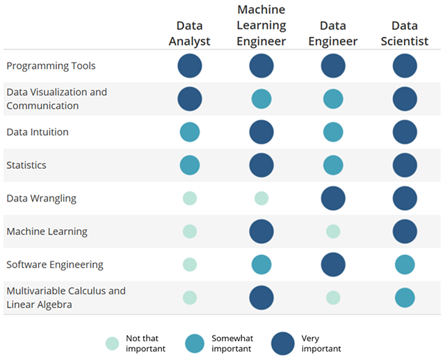

Giới thiệu về Machine Learning¶
Giới thiệu chung¶
- Định nghĩa:
- Machine Learning(ML) là một nhánh của ngành khoa học máy tính (Computer Science) tập trung sử dụng các phương pháp thống kê (Statistical techniques) để trao cho các hệ thống tính toán (máy tính) khả năng "học hỏi" từ tập dữ liệu (data) mà không cần phải được lập trình một cách chuyên biệt.
Theo định nghĩa trên bạn nên chú ý rằng khả năng "học hỏi" của các thuật toán ML dựa trên một loạt các phép toán thống kê xác suất và các quyết định/dự đoán do thuật toán đưa ra hoàn toàn phụ thuộc vào dữ liệu (data) đã thu thập được. Chính vì thế data là một thứ cốt lõi và cực kì quan trọng trong ML.
Có khá nhiều nhánh công việc giải quyết các bài toán xung quanh data và ML cũng chỉ là 1 trong số chúng mà thôi.
{kind=link}
{kind=link}
Hình trên cho thấy các kĩ năng cần thiết nếu bạn chọn một trong 4 công việc liên quan đến data. Trong đó kiến thức về ML là cực kì quan trọng đối với kĩ sư ML (Machine Learning Engineer) và nhà khoa học dữ liệu (Data Scientist).
Ghi chú
- Nguồn tài liệu tiếng Việt là không đủ và không cập nhật nếu bạn muốn tiến xa hơn trong sự nghiệp của mình. Nếu bạn muốn nâng level lên, mình
- khuyên thật lòng là bạn nên cân nhắc về việc dành thời gian trau dồi ngoại ngữ của mình. Cũng vì lẽ đó các thuật ngữ
được để nguyên tiếng Anh hoặc chú thích với mục đích khiến bạn không bị bỡ ngỡ. Mình đã phải rất chật vật với các định nghĩa toán học đã được Việt hóa khi học bằng tiếng Anh (vd: dạng toàn phương). Thế nên là mình tin rằng việc giữ nguyên hay chú thích sẽ giúp bạn về lâu về dài.
ML tasks (Các tác vụ của ML)¶
Có 2 tác vụ chính của ML phụ thuộc vào việc dữ liệu đã được tiền xử lí (phân loại) hay chưa đó là Supervised Learning và Unsupervised Learning.
Supervised Learning¶
Trong đó các thuật toán của DSSupervised Learning train mô hình(model) dựa trên data được dán nhãn (labeled) một cách thủ công. model được thuật toán sinh ra thể hiện mối quan hệ giữa thông số của đầu vào (input) và đầu ra (output). Sau đó model này sẽ được thẩm tra xác minh (testing) độ chính xác bằng cách dùng nó để dự đoán giá trị output mong muốn. Độ chính xác của thuật toán được thẩm tra bằng cách so sánh giá trị output dự đoán bởi thuật toán và giá trị đúng đã gắn nhãn trước đó. Chú ý là data dùng cho training và testing phải không bị trùng lặp. Thường thì data được gom lại thành một tệp, thuật toán sẽ thực hiện việc chia data một cách ngẫu nhiên thành 2 phần để phục vụ cho training và testing.
VD: chúng ta có một tập dữ liệu là các bức ảnh có và không có mặt người. Thuật toán phân loại (classification - bạn sẽ được tìm hiểu sau đó) sẽ tìm ra một model thể hiện mối liên hệ dữa thông tin của bức ảnh và label của nó. Sau đó, bạn có thể nhập vào một bức ảnh bất kì và model này sẽ chỉ ra trong bức ảnh đó là hình của một khuôn mặt hay không.
..note:: Các nhà xây dựng thuật toán đều cố gắng đưa ra các đặc điểm (feature) tiêu biểu thể hiện rõ ràng mối liên hệ giữa training data và label của nó. Nhưng vì đặc trưng là tập dữ liệu chỉ chiếm một phần nhỏ trong tổng số các khả năng có thể xảy ra và các đặc điểm đó không phải là tất cả các đặc điểm của model. Do đó xác suất dự đoán của mọi thuật toán không bao giờ có thể chính xác 100%. Kể cả con người cũng vẫn có thể mắc sai lầm. Hiện nay có một vài thuật toán có thể cho ra kết quả cao hơn xác suất dự đoán chính xác của con người nhưng còn quá sớm để nói là tương lai các hệ thống trí tuệ nhân tạo sẽ thống trị thế giới. Các bức tranh về Terminator, Transformer, ... vẫn còn ở rất xa so với nhân loại năm 2018.
- Semi-Supervised learning: